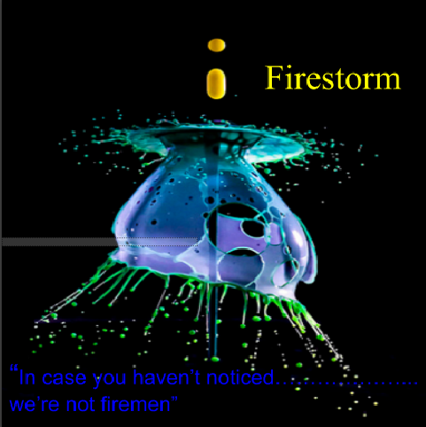

Firestorm
Challenge Information
Design thinking is when we try to solve problems or
create a product by using empathy. We’re studying
this to try to understand what people want before we
make something. We need to try to figure out what
the people want and try to use their opinions to solve
a problem or make a product. Design thinking is a way
to include everyone to anything. Design thinking is
something apple should try.
Album Cover

The band Firestorm has 3 members. They all have different stories, we start with Augustus. Augustus came from the harsh streets of Notting Hill, London. He didn't get a say on what islands his family bought and he always wanted to help others………………...like Wall Street traders. The 2nd member is Justinian, he came from Beverly Hills. He grew up with firefighting parents that expected him to always give back to rich while making time on making and profiting off setting off fires on the poor. Augustus and Justinian would eventually meet in a college of insurance scam. Our last and most influential member is Octavian, he comes from San Francisco. He is known for always helping the needy and asking more from the greedy. He was always grateful for what he got and never asked for more during his teenage years. He would meet August and Justin in a fist fight during a Wall Street occupation.
All three were arrested and sent to jail, they started and began to actually see each others points of views. They began to see that fire insurance scam was a pretty good way to make money and that August and Justin were idiots when it came to wealth inequality and economic inequality. They were a fire insurance scam group before they were firestorm and that’s actually where they got their name from. They were called firestorm because of much fires they made would spread how of how the smoke was so great that neighboring cities would think there was a storm of fire. Justinian's parents never believed the rumors that their son could be one of them. They always believed he would take up a job as a firefighter or a volunteer at least. He was proud of what he did and so were the other guys, well Octavian only liked it because it supported the needy. Which led to their quote “In case you haven’t noticed we’re not firemen.”
The guys have always had a love for music. Their first gig was actually a place they were going to blow up and the owner asked them “would you young men do me a favor and play those instruments one last time for my ears?” The boys played that night and realized something, something they never knew about themselves.